Perceiving sound: our sense of hearing
I always say deafness is a silent disability: you can’t see it, and it’s not life-threatening, so it has to touch your life in some way in order for it to be on your radar.
Rachel Shenton, Actress and Activist
Rachel Shenton, quoted above, is an actress who starred in, created and co-produced The Silent Child (2017), an award-winning film based on her own experiences as the child of a parent who became deaf after chemotherapy. The quote illustrates the challenge of deafness, which in turn demonstrates our reliance on hearing. As you will see in this section, hearing is critical for safely navigating the world and communicating with others. Consequently, hearing loss can have a devastating impact on individuals. To understand the importance of hearing and how the brain processes sound, we begin with the sound stimulus itself.
Making waves: the sound signal
The stimulus that is detected by our auditory system is a sound wave – a longitudinal wave produced from fluctuations in air pressure by vibration of objects. The vibration creates regions where the air particles are closer together (compressions) and regions where they are further apart (rarefractions) as the wave moves away from the source (Figure 4.17).
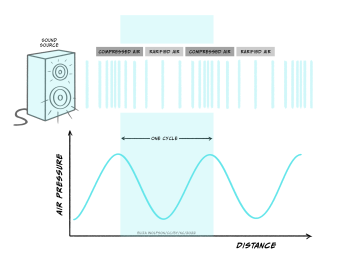
The nature of the sound signal is such that the source of the sound is not in direct physical contact with our bodies. This is different from the bodily senses described in the first two sections because in the senses of touch and pain the stimulus contacts the body directly. Because of this difference touch and pain are referred to as proximal senses. By contrast, in hearing, the signal originates from a source not in direct contact with the body and is transmitted through the air. This makes hearing a distal, rather than proximal, sense.
The characteristics of the sound wave are important for our perception of sound. Three key characteristics are shown in Figure 4.18: frequency, amplitude and phase.
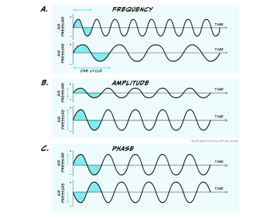
The frequency is the time it takes for one full cycle of the wave to repeat, and is measured in Hertz (Hz). One Hertz is simply one cycle per second. Humans can hear sounds with a frequency of 20 – 20000Hz (20 KHz). Examples of low frequency sounds, which are generally considered to be under 500 Hz, include the sounds of waves and elephants! In contrast, higher frequency sounds include the sound of whistling and nails on a chalk board. Amplitude is the amount of fluctuation in air pressure that is produced by the wave. The amplitude of a wave is measured in pascals (Pa), the unit of pressure. However, in most cases when considering the auditory system, this is converted into intensity and intensities are discussed in relative terms using the unit of the decibel (dB). Using this unit the range of intensities humans can typically hear are 0-140 dB. Above this level can be very harmful to our auditory system. Although you may see sound intensity expressed in dB, another expression is also commonly used. Where the intensity of sound is expressed with reference to a standard intensity (the lowest intensity a young person can hear a sound of 1000 Hz), it is written as dB SPL. The SPL stands for sound pressure level. Normal conversation is typically at a level of around 60 dB SPL.
Unlike frequency and amplitude, phase is a relative characteristic because it describes the relationship between different waves. They can be said to be in phase, meaning they have peaks at the same time or out of phase, meaning that they are at different stages in their cycle at anyone point in time.
The three characteristics above and the diagrams shown indicate a certain simplicity about sound signals. However, the waves shown here are pure waves, the sort you might expect from a tuning fork that emits a sound at a single frequency. These are quite different to the sound waves produced by more natural sources, which will often contain multiple different frequencies all combined together giving a less smooth appearance (Figure 4.19).
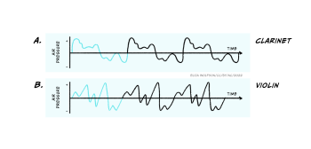
In addition, it is rare that only a single sound is present in our environment, and sound sources also move around! This can make sound detection and perception a very complex process and to understand how this happens we have to start with the ear.
Sound detection: the structure of the ear
The human ear is often the focus of ridicule but it is a highly specialised structure. The ear can be divided into three different parts which perform distinct functions:
- The outer ear which is responsible for gathering sound and funnelling it inwards, but also has some protective features
- The middle ear which helps prepare the signal for receipt in the inner ear and serves a protective function
- The inner ear which contains the sensory receptor cells for hearing, called hair cells. It is in the inner ear that transduction takes place.
Figure 4.20 shows the structure of the ear divided into these three sections.
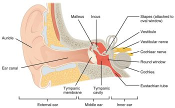
Although transduction happens in the inner ear, the outer and middle ear have key functions and so it is important that we briefly consider these.
The outer ear consists of the pinna (or auricle), which is the visible part that sticks out of the side of our heads. In most species the pinna can move but in humans they are static. The key function of the outer ear is in funnelling sound inwards, but the ridges of the pinna (the lumps and bumps you can feel in the ear) also play a role in helping us localise sound sources. Additional to this and often overlooked is the protective function of the outer ear. Ear wax found in the outer ear provides a water-resistant coating which is antibacterial and antifungal, creating an acidic environment hostile to pathogens. There are also tiny hairs in the outer ear, preventing entry of small particles or insects.
The middle ear sits behind the tympanic membrane (or ear drum) which divides the outer and middle ear. The middle ear is an air-filled chamber containing three tiny bones, called the ossicles. These bones are connected in such away that they create a lever between the tympanic membrane and the cochlea of the inner ear, which is necessary because the the cochlear is fluid-filled.
Spend a moment thinking about the last time you went swimming or even put your head under the water in a bath. What happens to the sounds you could hear beforehand?
The sounds get much quieter, and will likely be muffled, if at all audible, when your ear is filled with water.
Hopefully you will have noted that when your ear contains water from a pool or the bath, sound becomes very hard to hear. This is because the particles in the water are harder to displace than particles in air, which results in most of the sound being reflected back off the surface of the water. In fact only around 0.01% of sound is transmitted into water from the air, which explains why it is hard to hear underwater.
Because the inner ear is fluid-filled, this gives rise to a similar issue as hearing under water because the sound wave must move from the air-filled middle ear to the fluid-filler inner ear. To achieve this without loss of signal, the signal is amplified in the middle ear, by the lever actions of the ossicles, along with changes in the area of the bones contacting the tympanic membrane and cochlea, both of which result in a 20-fold increase in pressure changes as the sound wave enters the cochlea.
As with the outer ear, the middle ear also has a protective function in the form of the middle ear reflex. This reflex is triggered by sounds over 70 dB SPL and involves muscles in the middle ear locking the position of the ossicles.
What would happen if the ossicles could not move?
The signal could not be transmitted from the outer ear to the inner ear.
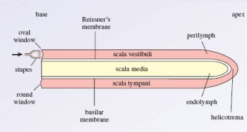
We now turn our attention to the inner ear and, specifically, the cochlea, which is the structure important for hearing (other parts of the inner ear form part of the vestibular system which is important for balance). The cochlea consists of a tiny tube, curled up like a snail. A small window into the cochlea, called the oval window (Figure 4.21a), is the point at which the sound wave enters the inner ear, via the actions of the ossicles.
The tube of the cochlea is separated into three different chambers by membranes. The key chamber to consider here is the scala media which sits between the basilar membrane and Reissner’s membrane, and contains the organ of corti (Figures 4.21b, c).
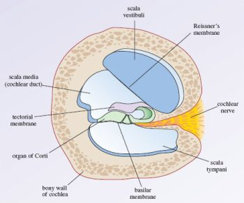
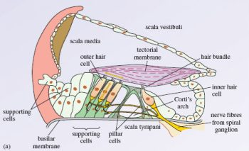
The cells critical for transduction of sound are the inner hair cells which can be seen in Figure 4.21c.
These cells are referred to as hair cells because they contain hair-like stereocillia protruding from one end. The end from which the stereocillia protrude is referred to as the apical end. They project into a fluid called endolymph, whilst the other end of the cell, the basal end, sits in perilymph. The endolymph contains a very high concentration of potassium ions.
How does this differ from typical extracellular space?
Normally potassium is at a low concentration outside the cell and a higher concentration inside, so this is the opposite to what is normally found.
When a sound wave is transmitted to the cochlea, it causes the movement of fluid in the chambers which in turn moves the basilar membrane upon which the inner hair cells sit. This movement causes their stereocilia to bend. When they bend, mechano-sensitive ion channels in the tips open and potassium floods into the hair cell causing depolarisation (Figure 4.22). This is the auditory receptor potential.
Spend a moment looking at Figure 4.22. What typical neuronal features can you see? How are these cells different from neurons?
There are calcium gated channels and synaptic vesicles but there is no axon.
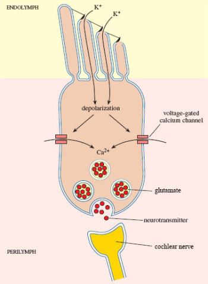
You should have noted that the inner hair cells only have some of the typical structural components of neurons. This is because, unlike the sensory receptor cells for the somatosensory system, these are not modified neurons and they cannot produce action potentials. Instead, when sound is detected, the receptor potential results in the release of glutamate from the basal end of the hair cell where it synapses with neurons that form the cochlear nerve to the brain. If sufficient glutamate binds to the AMPA receptors on these neurons, an action potential will be produced and the sound signal will travel to the brain.
Auditory pathways: what goes up must come down
The cochlear nerve leaves the cochlea and enters the brain at the level of the brainstem, synapsing with neurons in the cochlear nuclear complex before travelling via the trapezoid body to the superior olive, also located in the brainstem. This is the first structure in the pathway to receive information from both ears. Prior to this in the cochlear nuclear complex, information is only received from the ipsilateral ear. After leaving the superior olive, the auditory pathway continues in the lateral leminiscus to the inferior colliculus in the midbrain before travelling to the medial geniculate nucleus of the thalamus. From the thalamus, as with the other senses you have learnt about, the signal is sent onto the cortex. In this case, the primary auditory cortex in the temporal lobe. This complex ascending pathway is illustrated in Figure 4.23.
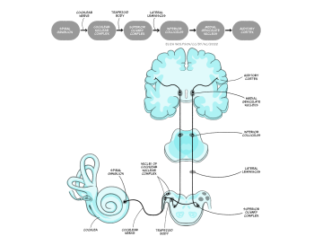
You will learn about the types of processing that occurs at different stages of this pathway shortly but it is also important to recognise that the primary auditory cortex is not the end of the road for sound processing.
Where did touch and pain information go after the primary somatosensory cortex?
In both cases, information was sent onto other cortical regions, including secondary sensory areas and areas of the frontal cortex.
As with touch and pain information, auditory information from the primary sensory cortex, in this case the primary auditory cortex, is carried to other cortical areas for further processing. Information from the primary auditory cortex divides into two separate pathways or streams: the ventral ‘what’ pathway and the dorsal ‘where’ pathway.
The ventral pathway travels down and forward and includes the superior temporal region and the ventrolateral prefrontal cortex. It is considered critical for auditory object recognition, hence the ‘what’ name (Bizley & Cohen, 2013). There is not yet a clear consensus on the exact role in recognition that the different structures in the pathway play, but it is known that activity in this pathway may be modulated by emotion (Kryklywy, Macpherson, Greening, & Mitchell, 2013).
In contrast to the ventral pathway the dorsal pathway travels up and forward, going into the posterodorsal cortex in the parietal lobe and forwards into the dorsal lateral prefrontal cortex (Figure 24). This pathway is critical for identifying the location of sound, as suggested by the ‘where’ name. As with the ventral pathway, the exact role of individual structure is not clear but it too can be modulated by other functions. Researchers have found that whilst it is not impacted by emotion (Kryklywy et al., 2013) it is, perhaps unsurprisingly, modulated by spatial attention (Tata & Ward, 2005).
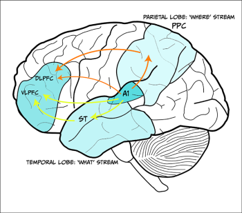
Recall that when discussing pain pathways you learnt about a pathway which extends from higher regions of the brain to lower regions – a descending pathway. This type of pathway also exists in hearing. The auditory cortex sends projections down to the medial geniculate nucleus, inferior colliculus, superior olive and cochlear nuclear complex, meaning every structure in the ascending pathway receives descending input. Additionally, there are connections from the superior olive directly onto the inner and outer hair cells. These descending connections have been linked to several different functions including protection from loud noises, learning about relevant auditory stimuli, altering responses in accordance with the sleep/wake cycle and the effects of attention (Terreros & Delano, 2015).
Perceiving sound: from the wave to meaning
In order to create an accurate perception of sound information we need to extract key information from the sound signal. In the section on the sound signal we identified three key features of sound: frequency, intensity and phase. In this section we will consider these as you learn about how key features of sound are perceived, beginning with frequency.
The frequency of a sound is thought to be coded by the auditory system in two different ways, both of which begin in the cochlea. The first method of coding is termed a place code because this coding method relies on stimuli of different frequencies being detected in different places within the cochlea. Therefore, if the brain can tell where in the cochlea the sound was detected, the frequency can be deduced. Figure 4.25 shows how different frequencies can be mapped within the cochlea according to this method. At the basal end of the cochlea sounds with a higher frequency are represented whilst at the apical end, low frequency sounds are detected. The difference in location arises because the different sound frequencies cause different displacement of the basilar membrane. Consequently, the peak of the displacement along the length of the membrane differs according to frequency, and only hair cells at this location will produce a receptor potential. Each hair cell is said to have a characteristic frequency to which it will respond.
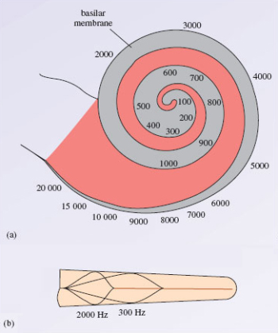
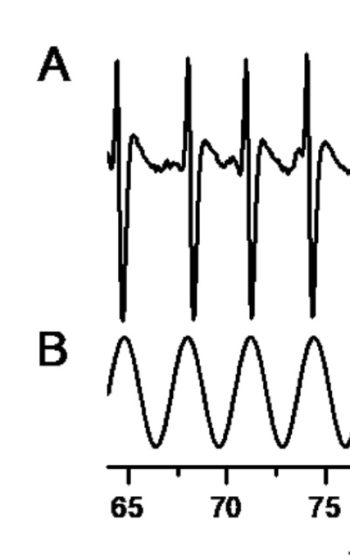
Although there is some support for a place code of frequency information, there is also evidence from studies in humans that we might be able to detect smaller changes in sound frequency that would be possible from place coding alone.
This led researchers to consider other possible explanations and to the proposal of a temporal code. This proposal is based on research which shows a relationship between the frequency of the incoming sound wave and the firing of action potentials in the cochlear nerve (Wever & Bray, 1930), which is illustrated in Figure 4.26. Thus when an action potential occurs, it provides information about the frequency of the sound.
Recall that we can hear sounds of up to 20,000 Hz or 20 KHz. How does this compare to the firing rate of neurons?
This is much higher than the firing rate of neurons. Typical neurons are thought to be able to fire at up to 1000 Hz.
Given the constraints of firing rate, it is not possible for temporal code to account for the range of frequencies that we can perceive. Wever and Bray (1930) proposed that groups of neurons could work together to account for higher frequencies, as illustrated in Figure 4.27.
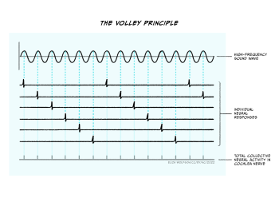
The two coding mechanisms are not mutually exclusive and researchers now believe that temporal code may operate at very low frequencies (< 50 Hz) and place code may operate at higher frequencies (> 3000 Hz) with all intermediate frequencies being coded for my both mechanisms. Irrespective of which coding method is used for frequency in the cochlea, once encoded, this information is preserved throughout the auditory pathway.
Sound frequency can be considered an objective characteristic of the wave but the perceptual quality it most closely relates to is pitch. This means that typically sounds of high frequency are perceived as having a high pitch.
The second key characteristic of sound to consider is intensity. As with frequency, intensity information is believed to be coded initially in the cochlea and then transmitted up the ascending pathway. Also in line with the coding of frequency, there are two suggested mechanisms for coding intensity. The first method suggests that intensity can be encoded according to firing rate in the auditory nerve. To understand this it is important to remember the relationship between stimulus and receptor potential which was first described in the section on touch. You should recall that the larger the stimulus, the bigger the receptor potential. In the case of sound, the more intense the stimulus, the larger the receptor potential will be, because the ion channels will be held open longer with a larger amplitude sound wave. This means that more potassium can flood into the hair cell causing greater depolarisation and subsequently greater release of glutamate. The more glutamate that is released, the greater the amount that is likely to bind to the post-synaptic neuron forming the auditory nerve. Given action potentials are all-or-none, the action potentials stay the same size but the frequency of them is increased.
The second method of encoding intensity is thought to be the number of neurons firing. Recall from Figure 4.25b that sound waves will result in a specific position of maximal displacement of the basilar membrane, and so typically only activate hair cells with the corresponding frequency which in turn signal to specific neurons in the cochlear nerve. However, it is suggested that as a sound signal becomes more intense there will be sufficient displacement to activate hair cells either side of the characteristic frequency, albeit to a lesser extent, and therefore more neurons within the cochlear nerve may produce action potentials.
You may have noticed that the methods for coding frequency and intensity here overlap.
Considering the mechanisms described, how would you know whether an increased firing rate in the cochlear nerve is caused by a higher frequency or a greater intensity of a sound?
The short answer is that the signal will be ambiguous and you may not know straight away.
The overlapping coding mechanism can make it difficult to achieve accurate perception; indeed we know that perception of loudness, the perceptual experience that most closely correlates with sound intensity, is impacted significantly by the frequency of sound. It is likely that the combination of multiple coding mechanisms supports our perception because of this. Furthermore, small head movements can be made which can impact on intensity of sound and therefore inform our perception of both frequency and intensity when the signal is ambiguous.
This leads us nicely onto the coding of sound location, which requires information from both ears to be considered together. For that reason sound localisation coding cannot take place in the cochlea and so happens in the ascending auditory pathway.
Which is the first structure in the pathway to receive auditory signals from both ears?
It is the superior olive in the brainstem.
The superior olive can be divided into the medial and lateral superior olive and each is thought to use a distinct mechanism for coding location of sound. Neurons within the medial superior olive receive excitatory inputs from both cochlear nuclear complexes (i.e., the one of the right and left), which allows them to act as coincidence detectors. To explain this a little more it is helpful to think about possible positions of sound sources relative to your head. Figure 4.28 shows the two horizontal planes of sound: left to right and back to front.
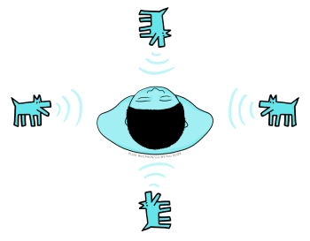
We will ignore stimuli falling exactly behind or exactly in front for a moment and focus on those to the left or right. Sound waves travel at a speed of 348 m/s (which you may also see written as ms-1) and a sound travelling from one side of the body will reach the ear on that side ahead of the other side. The average distance between the ears is 20cm so this means that sound waves coming directly from, for example, the right side, will hit the right ear 0.6 ms before they reach the left ear and vice versa if sound was coming from the left. Shorter delays between the sounds arriving at the left and right ear are experienced for sounds coming from less extreme right or left positions. This time delay means that neurons in the cochlear nerve closest to the sound source will fire first. This head start is maintained in the cochlear nuclear complex. Neurons in the medial superior olive are thought to be arranged such that they can detect specific time delays and thus code the origin of the sound. Figure 29 illustrates how this is possible. If a sound is coming from the left side, the signal from the left cochlear nuclear complex will reach the superior olive first and likely get all the way along to neuron C before the signal from the right cochlear nuclear complex combines with it, maximally exciting the neuron.
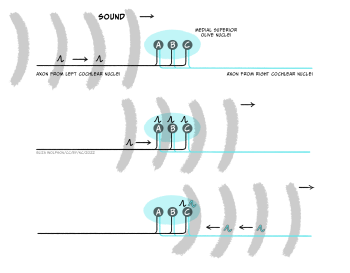
Using Figure 4.29, what would happen if the sound was from exactly in front or behind?
The input from the two cochlear nuclear complexes would likely combine on neuron B. Neuron B is therefore, in effect, a coincidence detector for no time delay between signals coming from the two ears. The brain can therefore deduce that the sound location is not to the left or the right – but it can’t tell from these signals if the sound is in front of or behind the person.
This method, termed interaural (between the ears) time delay, is thought to be effective for lower frequencies, but for higher frequencies another method can be used by the lateral superior olive. Neurons in this area are thought to receive excitatory inputs from the ipsilateral cochlear nuclear complex and inhibitory inputs from the contralateral complex. These neurons detect the interaural intensity difference, that is the reduction in intensity caused by the sound travelling across the head. Importantly the drop of intensity as sound moves around the head is greater for higher frequency sounds. The detection of interaural time and intensity differences are therefore complementary, favouring low and high frequency sounds, respectively.
The two mechanisms outlined for perceiving location here are bottom-up methods. They rely completely on the data we receive, but there are additional cues to localisation. For example, high frequency components of a sound diminish more than low frequency components when something is further away, so the relative amount of low and high frequencies can tell us something about the sound’s location.
What would we need to know to make use of this cue?
We would need to know what properties (the intensity of different frequencies) to expect in the sound to work out if they are altered due to distance. Use of this cue therefore requires us to have some prior experience of the sound.
By combining all the information about frequency, intensity and localisation we are able to create a percept of the auditory world. However, before we move on it is important to note that whilst much of the auditory coding appears to take place in lower areas of the auditory system, this information is preserved and processed throughout the cortex. More importantly, it is also combined with top-down input and several structures will co-operate to create a perception of complex stimuli such as music, including areas of the brain involved in memory and emotion (Warren, 2008).
Hearing loss: causes, impact and treatment
As indicated in the opening quote to this section, hearing loss can be a difficult and debilitating experience. There are several different types of hearing loss and each comes with a different prognosis. To begin with it is helpful to categorise types of hearing loss according to the location of the impairment:
- Conductive hearing loss occurs when the impairment is within the outer or middle ear, that is, the conduction of sound to the cochlea is interrupted.
- Cochlear hearing loss occurs when there is damage to the cochlea itself.
- Retrocochlear hearing loss occurs when the damage is to the cochlear nerve of areas of the brain which process sound. The latter two categories are often considered collectively under the classification of sensorineural hearing loss.
The effects of hearing loss are typically considered in terms of hearing threshold and hearing discrimination. Threshold refers to the quietest sound that someone is able to hear in a controlled environment, whilst discrimination refers to their ability to concentrate on a sound in a noisy environment. This means that we can also categorise hearing loss by the extent of the impairment as indicated in Table 3.
|
Hearing Loss Classification
|
Hearing level (dB HL)
|
Impairment
|
|
Mild
|
20-39
|
Following speech is difficult esp. in noisy environment
|
| Moderate | 40-69 | Difficulty following speech without hearing aid |
|
Severe
|
70-89
|
Usually need to lip read or use sign language even with hearing aid
|
| Profound | 90-120 | Usually need to lip read or use sign language; hearing aid ineffective |
Table 3. Different classes of hearing loss
You should have spotted that the unit given in Table 3 is not the typical dB or dB SPL. This is a specific type of unit, dB HL or hearing level, used for hearing loss (see Box: Measuring hearing loss, below).
Measuring hearing loss
If someone is suspected of having hearing loss they will typically undergo tests at a hearing clinic to establish the presence and extent of hearing loss. This can be done with an instrument called an audiometer, which produces sounds at different frequencies that are played to the person through through headphones (Figure 4.30).
The threshold set for the tests is that of a healthy young listener and this is considered to be 0 dB. If someone has a hearing impairment they are unlikely to be able to hear the sound at this threshold and the intensity will have to be increased for them to hear it, which they can indicate by pressing a button. The amount by which is it increased is the dB HL level. For example, if someone must have the sound raised by 45 dB in order to detect the sound they will have moderate hearing loss because the value of 45 dB HL falls into that category (Table 3).
Conductive hearing loss typically impacts only on hearing threshold such that the threshold becomes higher, i.e., the quietest sound that someone can hear is louder than the sound someone without hearing loss can hear. Although conductive hearing loss can be caused by changes within any structure of the outer and middle ear, the most common occurrence is due to a build up of fluid in the middle ear, giving rise to a condition called otitis media with effusion, or glue ear. This condition is one of the most common illnesses found in children and the most common cause of hearing loss within this age group (Hall, Maw, Midgley, Golding, & Steer, 2014).
Why would fluid in the middle ear be problematic?
This is normally an air filled structure, and the presence of fluid would result in much of the sound being reflected back from the middle ear and so the signal will not reach the inner ear for transduction.
Glue ear typically arises in just one ear, but can occur in both. It generally only causes mild hearing loss. It is thought to be more common in children than adults because the fluid build-up arises due to the eustachian tube not draining properly. This tube connects the ear to the throat and normally drains the moisture from the air in the middle ear. In young children its function can be impacted adversely by the growth of adenoid tissue, which blocks the throat end of the tube meaning it cannot drain and fluid gradually builds up. However, several risk factors for glue ear have been identified.
These include iron deficiency (Akcan et al., 2019), allergies, specifically to dust mites (Norhafizah, Salina, & Goh, 2020), and exposure to second hand smoke as well as shorter duration of breast feeding (Kırıs et al., 2012; Owen et al., 1993). Social risk factors have also been identified including living in a larger family (Norhafizah et al., 2020), being part of a lower socioeconomic group (Kırıs et al., 2012) and longer hours spent in group childcare (Owen et al., 1993).
The risk factors of glue ear are possibly less important than the potential consequences of the condition. It can result in pain and disturbed sleep which can in turn create behavioural problems, but the largest area of concern is on educational outcomes, due to delays in language development and social isolation as children struggle to interact with their peers. Studies have demonstrated poorer educational outcomes for children who experience chronic glue ear (Hall et al., 2014; Hill, Hall, Williams, & Emond, 2019) but it is likely that they can catch up over time, meaning any long lasting impact is minimal.
Despite the potential for disruption to educational outcomes, the first line of treatment for glue ear is simply to watch and wait and treat any concurrent infections. If the condition does not improve in a few months, grommets may be used. These are tiny plastic inserts put into the tympanic membrane to allow the fluid to drain. This minor surgery is not without risk because it can cause scarring of the membrane which may impact on its elasticity.
Whilst glue ear is the most common form of conductive hearing loss, the most common form of sensorineural hearing loss is Noise Induced Hearing Loss (NIHL). This type of hearing loss is caused by exposure to high intensity noises, from a range of contexts (e.g., industrial, military and recreational) and normally comes on over a period of time so gets greater with age, as hair cells are damaged or die. It is thought to affect around 5% of the population and typically results in bilateral hearing loss that affects both the hearing threshold and discrimination. Severity can vary and its impact is frequency dependent with the biggest loss of sensitivity at higher frequencies (~4000 Hz) that coincide with many of the every day sounds we hear, including speech.
At present there is no treatment for NIHL and instead it is recommended that preventative measures should be taken, for example through the use of personal protective equipment (PPE).
What challenges can you see to this approach [using PPE]?
This assumes that PPE is readily available, which it may not be. For example, in the case of military noises, civilians in war zones are unlikely to be able to access PPE. It also assumes that PPE can be worn without impact. A musician is likely to need to hear the sounds being produced and so although use of some form of PPE may be possible, doing so may not be practical.
The impact of NIHL on an individual is substantial. For example research has demonstrated that the extent of hearing loss in adults is correlated with measures of social isolation, distress and even suicide ideation (Akram, Nawaz, Rafi, & Akram, 2018). Other studies indicate NIHL can result in frustration, anxiety, stress, resentment, depression, and fatigue (Canton & Williams, 2012). There are also reported effects on employment with negative effects on employment opportunities and productivity (Canton & Williams, 2012; Neitzel, Swinburn, Hammer, & Eisenberg, 2017). Additionally, given NIHL will typically occur in older people, it may be harder to diagnose because they mistake it for a natural decline in hearing that occurs as people get older, meaning they may not recognise the need for preventive action if it is possible, or the need to seek help.
Looking across the senses
We have now reached the end of the section on hearing, but before we continue to look at the visual system it is helpful to spend a moment reflecting on the systems you have learnt about so far.
Exercises
- Compare and contrast the mechanisms by which touch, pain and sound signals are transduced.
There are several similarities you could have mentioned here. For example, all these systems can include mechano-sensitive ion channels, that is, those that are opened by mechanical force. Additionally, they all involve the influx of a positively charged ion causes a depolarising receptor potential. There are also key differences as well. For example, whilst touch and hearing only use mechano-sensitive channels, pain can also use thermo-sensitive and chemo-sensitive channels. Furthermore, the ions that create the receptor potential differ. In somatosensation, the incoming ion is sodium, as is typical for depolarisation across the nervous system, whilst in hearing it is potassium due to the potassium-rich endolymph.
2. Considering the pathway to the brain, what do you notice is common to all the sensory systems discussed so far?
In all systems, the thalamus receives the signal on the way to the primary sensory cortex for that system. Additionally, there are typically, projections to a range of cortical areas after the primary sensory cortex.
3. Extracting key features of the sensory signal is important. What common features are detected across all three systems?
In all cases the intensity and location of the stimulus is encoded. Additionally, in touch and hearing, frequency of information is encoded.
Summarising hearing
Key Takeaways
- Our sense of hearing relies on the detection of a longitudinal wave created by vibration of objects in air. These waves typically vary in frequency, amplitude and phase
- The three-part structure of the ear allows us to funnel sounds inwards and amplify the signal before it reaches the fluid-filled cochlea of the inner ear where transduction takes place
- Transduction occurs in specialised hair cells which contain mechano-sensitive channels that open in response to vibration caused by sound waves. This results in an influx of potassium producing a receptor potential
- Unlike the somatosensory system, the hair cell is not a modified neuron and therefore cannot itself produce an action potential. Instead, an action potential is produced in neurons of the cochlear nerve, when the hair cell releases glutamate which binds to AMPA receptors on these neurons. From here the signal can travel to the brain
- The ascending auditory pathway is complex, travelling through two brainstem nuclei (cochlear nuclear complex and superior olive) before ascending to the midbrain inferior colliculus, the medial geniculate nucleus of the thalamus and then the primary auditory cortex. From here it travels in dorsal and ventral pathways to the prefrontal cortex, to determine where and what the sound is, respectively
- There are also descending pathways from the primary auditory cortex which can influence all structures in the ascending pathway
- Key features are extracted from the sound wave beginning in the cochlea. There are two proposed coding mechanisms for frequency extraction: place coding and temporal coding. Place coding uses position-specific transduction in the cochlea whilst temporal coding locks transduction and subsequent cochlea nerve firing to the frequency of the incoming sound wave. Once coded in the cochlea this information is retained throughout the auditory pathway
- Intensity coding is thought to occur either through the firing rate of the cochlea nerve or the number of neurons firing.
- Location coding requires input from both ears and therefore first occurs outside the cochlea at the level of the superior olive. Two mechanisms are proposed: interaural time delays and interaural intensity differences
- Hearing loss can be categorised according to where in the auditory system the impairment occurs. Conductive hearing loss arises when damage occurs to the outer or middle ear and sensorineural hearing loss arises when damage is in the cochlea or beyond
- Different types of hearing loss impact hearing threshold and hearing discrimination differently. The extent of hearing loss can vary as can the availability of treatments
- Hearing loss is associated with a range of risk factors and can have a significant impact on the individual including their social contact with others, occupational status and, in children, academic development.
References
Akcan, F. A., Dündar, Y., Bayram Akcan, H., Cebeci, D., Sungur, M. A., & Ünlü, İ. (2019). The association between iron deficiency and otitis media with effusion. The Journal of International Advanced Otology, 15(1), 18-21. https://doi.org/10.5152/iao.2018.5394
Akram, B., Nawaz, J., Rafi, Z., & Akram, A. (2018). Social exclusion, mental health and suicidal ideation among adults with hearing loss: Protective and risk factors. Journal of the Medical Association Pakistan, 68(3), 388-393. https://jpma.org.pk/article-details/8601?article_id=8601
Bizley, J. K., & Cohen, Y. E. (2013). The what, where and how of auditory-object perception. Nature Reviews Neuroscience, 14(10), 693-707. https://dx.doi.org/10.1038/nrn3565
Canton, K., & Williams, W. (2012). The consequences of noise-induced hearing loss on dairy farm communities in New Zealand. J Agromedicine, 17(4), 354-363. https://dx.doi.org/10.1080/1059924x.2012.713840
Hall, A. J., Maw, R., Midgley, E., Golding, J., & Steer, C. (2014). Glue ear, hearing loss and IQ: an association moderated by the child’s home environment. PloS One, 9(2), e87021. https://doi.org/10.1371/journal.pone.0087021
Hill, M., Hall, A., Williams, C., & Emond, A. M. (2019). Impact of co-occurring hearing and visual difficulties in childhood on educational outcomes: a longitudinal cohort study. BMJ Paediatrics Open, 3(1), e000389. http://dx.doi.org/10.1136/bmjpo-2018-000389
Kırıs, M., Muderris, T., Kara, T., Bercin, S., Cankaya, H., & Sevil, E. (2012). Prevalence and risk factors of otitis media with effusion in school children in Eastern Anatolia. Int J Pediatr Otorhinolaryngol, 76(7), 1030-1035. https://dx.doi.org/10.1016/j.ijporl.2012.03.027
Kryklywy, J. H., Macpherson, E. A., Greening, S. G., & Mitchell, D. G. (2013). Emotion modulates activity in the ‘what’ but not ‘where’ auditory processing pathway. Neuroimage, 82, 295-305. https://dx.doi.org/10.1016/j.neuroimage.2013.05.051
Neitzel, R. L., Swinburn, T. K., Hammer, M. S., & Eisenberg, D. (2017). Economic Impact of Hearing Loss and Reduction of Noise-Induced Hearing Loss in the United States. Journal of Speech, Language, and Hearing Research, 60(1), 182-189. https://dx.doi.org/10.1044/2016_jslhr-h-15-0365
Norhafizah, S., Salina, H., & Goh, B. S. (2020). Prevalence of allergic rhinitis in children with otitis media with effusion. European Annals of Allergy and Clinical Immunology, 52(3), 121-130. https://dx.doi.org/10.23822/EurAnnACI.1764-1489.119
Owen, M. J., Baldwin, C. D., Swank, P. R., Pannu, A. K., Johnson, D. L., & Howie, V. M. (1993). Relation of infant feeding practices, cigarette smoke exposure, and group child care to the onset and duration of otitis media with effusion in the first two years of life. The Journal of Pediatrics, 123(5), 702-711. https://dx.doi.org/10.1016/s0022-3476(05)80843-1
Tata, M. S., & Ward, L. M. (2005). Spatial attention modulates activity in a posterior “where” auditory pathway. Neuropsychologia, 43(4), 509-516. https://dx.doi.org/10.1016/j.neuropsychologia.2004.07.019
Terreros, G., & Delano, P. H. (2015). Corticofugal modulation of peripheral auditory responses. Frontiers in Systems Neuroscience, 9, 134. https://dx.doi.org/10.3389/fnsys.2015.00134
Warren, J. (2008). How does the brain process music? Clinical Medicine, 8(1), 32-36. https://doi.org/10.7861/clinmedicine.8-1-32
Wever, E. G., & Bray, C. W. (1930). The nature of acoustic response: The relation between sound frequency and frequency of impulses in the auditory nerve. Journal of Experimental Psychology, 13(5), 373. https://doi.org/10.1037/h0075820
Factors which increase the likelihood of developing the condition